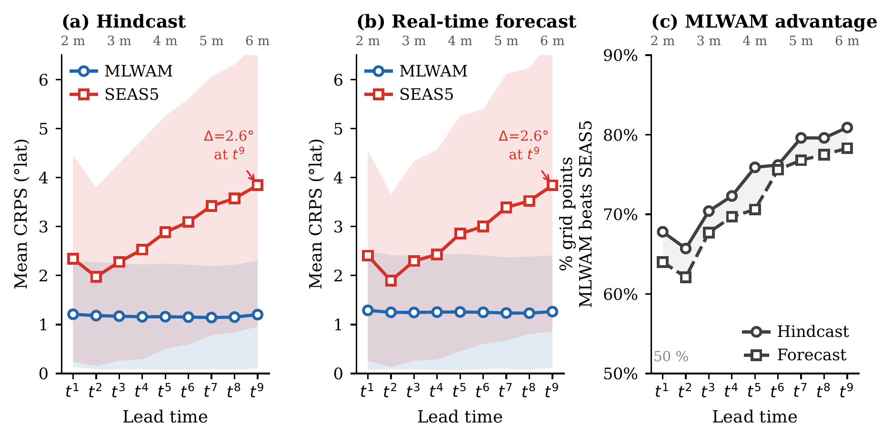
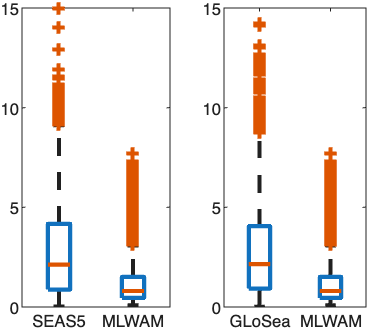
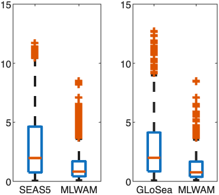
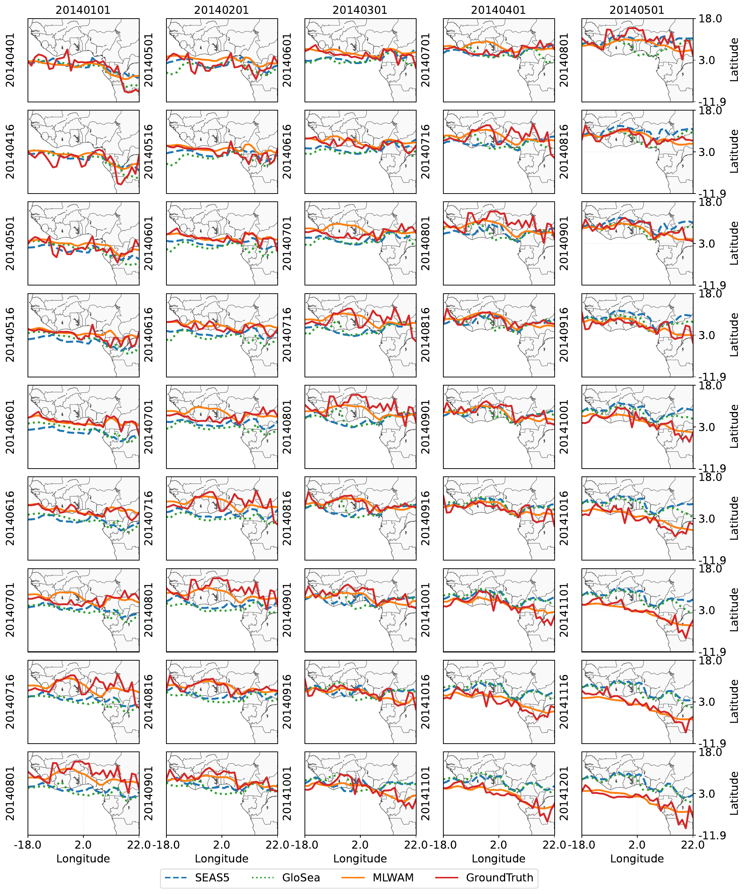

Overview
Rainfall in West Africa shapes agricultural yields, water availability, and flood risk for hundreds of millions of people. Agriculture in the region is predominantly rainfed, and over the past two decades the Sahel has seen recurrent droughts and floods. Most of this rainfall is brought by the West African Monsoon (WAM): a seasonal flow of moist air from the Gulf of Guinea that carries a band of rain, the rainbelt, northward toward the Sahara starting in May, before it recedes back to the Atlantic from October.
Predicting how the rainbelt will depart from its usual seasonal cycle in a given year remains highly challenging. Operational seasonal forecasting systems, such as ECMWF's SEAS5 and the UK Met Office's GloSea, couple atmosphere, ocean, land, and ice models; they are extremely expensive to build and run, and they struggle to capture the year-to-year variability of the monsoon over West Africa. This project develops statistical and machine learning methods to understand and forecast the WAM at seasonal time scales.
The rainbelt
Rather than forecasting the full rainfall field, we focus on the location of the rainbelt: for each longitude \(\lambda\) and each two-week period \(t\), the latitude \(Z(\lambda, t)\) of maximum rainfall near the tropics, computed from IMERG satellite rainfall over a region spanning 18°W–22°E and 12°S–18°N. The curve \(\lambda \mapsto Z(\lambda, t)\) traces the rainbelt across West Africa, and its trajectory over the following months is what we aim to predict.
MLWAM: a physics-informed model for seasonal prediction
MLWAM is a physics-informed machine learning model that produces probabilistic forecasts of the rainbelt latitude from 2 to 6 months ahead, using sea surface temperature (SST) fields alone. Its main ingredients are:
- Multi-basin SST inputs. West African rainfall is linked to SST anomalies in several oceans. MLWAM ingests SST from the Gulf of Guinea, the Indian Ocean, the North Atlantic, the Mediterranean Sea, and the equatorial Pacific simultaneously, so it can learn how these basins interact.
- A PDE constraint encoding climatology. The broad seasonal movement of the rainbelt is driven by the difference in solar heating between the two hemispheres, which pulls it back and forth like a pendulum. We capture this with the equation $$\partial_{tt}^2 Z(\lambda, t) - \theta_1(\lambda)\, s(t)\, Z(\lambda, t) = \theta_2(\lambda),$$ where \(s(t)\) is a proxy for the inter-hemispheric difference in insolation, and use it to regularize a lean UNet during training. This plays a crucial role in avoiding overfitting with limited data.
- Climate model data to augment observations. About 25 years of satellite and reanalysis data (IMERG and ERA5) are too few to train a deep learning model on their own. We augment them with a moderate amount of CESM2 climate simulations from 1960–2000. Evaluation uses observations only.
- Uncertainty quantification. Each forecast comes with a predictive distribution, obtained with the EasyUQ method.
Results
We evaluated MLWAM by five-fold cross-validation over 2001–2024, holding out three years at a time, and compared it with SEAS5. Skill is measured relative to a 30-year climatology, so a positive score means the model predicts the year-to-year departures of the rainbelt from its seasonal cycle, not merely the seasonal cycle itself.
- MLWAM achieves positive CRPS skill over climatology in 62% of space–time instances, more than double the rate of SEAS5 (about 30%).
- MLWAM's anomaly correlation is positive across essentially the whole domain, and exceeds 0.5 in about 28–31% of cases, compared with 1–9% for SEAS5.
- MLWAM's mean CRPS is less than half that of SEAS5, and it outperforms SEAS5 at more than 70% of space–time grid points.
- MLWAM's error stays nearly constant from 2 to 6 months ahead, while SEAS5's error grows by about 64%; MLWAM's advantage therefore increases with lead time.
- MLWAM's forecast distributions are much better calibrated: its nominal 90% prediction intervals cover about 80% of outcomes, compared with 13–35% for SEAS5.

Hindcast

Forecast


MLWAM is open-source and trained at a fraction of the cost of operational systems. Because the position of the rainbelt governs the onset and end of the rainy season and the occurrence of dry spells, these forecasts open new possibilities for climate services for farming communities across the region.
Publications
I. Kalita, N. Pillai, P. Huybers, Y. Atchade. Seasonal forecasting of the West African tropical rainbelt. Preprint (2026). Code on GitHub
I. Kalita, L. Vilallonga, Y. Atchade. Data-driven rainfall prediction at a regional scale: a case study with Ghana. Artificial Intelligence for the Earth Systems (2026). DOI
Funding
Supported in part by NSF grant DMS-2515787 and DOE grant DE-SC0026379.